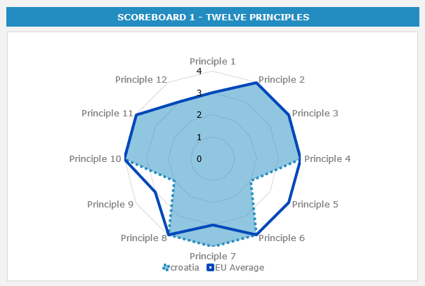
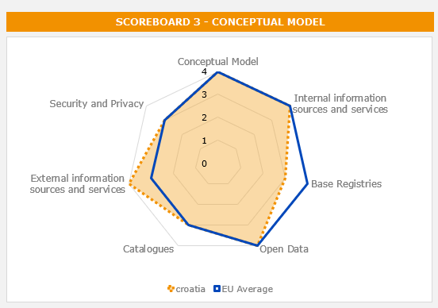

ISA2
Digital Public Administration factsheet 2022
Croatia
2 Digital Public Administration Highlights 10
3 Digital Public Administration Political Communications 12
4 Digital Public Administration Legislation 21
5 Digital Public Administration Governance 29
6 Digital Public Administration Infrastructure 34
7 Cross-border Digital Public Administration Services for Citizens and Businesses 56

Country
Profile
1
The following graphs present data for the latest Generic Information Society Indicators for Croatia compared to the EU average. Statistical indicators in this section reflect those of Eurostat at the time the Edition is being prepared.
Percentage of individuals using the internet for interacting with public authorities in Croatia | Percentage of individuals using the internet for obtaining information from public authorities in Croatia |
Percentage of individuals using the internet for downloading official forms from public authorities in Croatia | Percentage of individuals using the internet for sending filled forms to public authorities in Croatia |
In 2017, the European Commission published the European Interoperability Framework (EIF) to give specific guidance on how to set up interoperable digital public services through a set of 47 recommendations. The picture below represents the three pillars of the EIF around which the EIF Monitoring Mechanism was built to evaluate the level of implementation of the EIF within the Member States. It is based on a set of 71 Key Performance Indicators (KPIs) clustered within the three main pillars of the EIF (Principles, Layers and Conceptual model), outlined below.

Source: European Interoperability Framework Monitoring Mechanism 2021
For each of the three pillars, a different scoreboard was created to breakdown the results into their main thematic areas (i.e. the 12 principles of interoperability, the interoperability layers and the components of the conceptual model). The thematic areas are evaluated on a scale from one to four, where one means a lower level of implementation and 4 means a higher level of implementation. The graphs below show the result of the third EIF Monitoring Mechanism data collection exercise for Croatia in 2021.

Source: European Interoperability Framework Monitoring Mechanism 2021
Croatia’s results in Scoreboard 1 show an overall medium to good implementation of the EIF Principles, scoring at the European average for most of the Principles and higher than the EU average for Principle 7 (Inclusion and Accessibility). Areas of improvement are concentrated in the Principles 5 (Technological neutrality and data portability) and 9 (Multilingualism), for which the scores of 2 show a medium performance in the implementation of corresponding recommendations. Indeed, the country should not impose any technological solutions on citizens, businesses and other administrations that are technology-specific or disproportionate to their real needs (Principle 5 – Recommendation 08). In addition, Croatia should use information systems and technical architectures that cater for multilingualism when establishing public services and decide on the level of multilingualism support based on the needs of the expected users (Principle 9 – Recommendation 16).

Source: European Interoperability Framework Monitoring Mechanism 2021
The Croatian results for the implementation of interoperability layers assessed for Scoreboard 2 show an overall good performance with mostly scores of 4. The only potential area of improvement to enhance the country’s implementation of the recommendations under Scoreboard 2 is concentrated on interoperability governance and semantic interoperability, where Croatia scored 3. The lower score is due to the lower score for Recommendation 24, whereby Croatia should improve its participation in standardisation work relevant to citizens’ or businesses’ needs, to ensure that their requirements are met.

Source: European Interoperability Framework Monitoring Mechanism 2021
Croatia’s scores assessing the Conceptual Model in Scoreboard 3 show a medium performance in the implementation of recommendations associated with almost all parameters, namely internal and external information sources and services, open data, catalogues, the conceptual model itself and security and privacy. However, to align with the European average, Croatia could improve the implementation of the recommendations related to Base Registries, by publishing the semantic and technical means and documentation needed for others to connect and reuse available information (Recommendation 38) and matching each base registry with appropriate metadata including the description of its content, service assurance and responsibilities, etc.
Additional information on Croatia’s results on the EIF Monitoring Mechanism is available online through interactive dashboards.
The graph below presents the main highlights of the latest eGovernment Benchmark Report, an assessment of eGovernment services in 36 countries: the 27 European Union Member States, as well as Iceland, Norway, Montenegro, the Republic of Serbia, Switzerland, Turkey, Albania and Macedonia (referred to as the EU27+).
The study evaluates online public services on four dimensions:
The 2022 report presents the biennial results, achieved over the past two years of measurement of all nine life events used to measure the above-mentioned key dimensions. More specifically, these life events are divided between seven ‘Citizen life events’ (Starting a small claim procedure, Moving, Owning a car, Health measured in 2021, and Career, Studying, Family life, measured in 2020) and two ‘Business life events’ (Regular Business Operations, measured in 2021, and Business start-up, measured in 2020).

Source: eGovernment Benchmark Report 2022 Country Factsheets

Digital Public Administration Highlights
2
Digital Public Administration Political Communications |
The National Recovery and Resilience Plan 2021-2026 has been adopted in July 2021, setting out an ambitious action plan with reforms and investments related to all dimensions of the digitalisation. The vigorous implementation of the measures from the Recovery and Resilience Plan can bring an important change of pace and an opportunity for digitalisation to be launched throughout Croatia. In this regard, the following four reforms are planned:
- Digital Croatia Strategy and strengthening inter-institutional cooperation and coordination aimed at establishing a strategic framework for coordinated and effective digital transition of society and economy
- Improving the interoperability of information systems
- Modernisation and further development of state information infrastructure as a basis for safe and financially efficient interaction of public administration bodies
- Strengthening connectivity as the basis of the digital transition of society and the economy
| Digital Public Administration Legislation |
In March 2021, the Government of the Republic of Croatia adopted the National Plan for the Development of Broadband Access in the Republic of Croatia in the Period from 2021 to 2027.In April 2021, the Government of the Republic of Croatia adopted the Standard for the Development of Public e-Services.
| Digital Public Administration Governance |
No recent update has been identified in this field to date.
| Digital Public Administration Infrastructure |
During 2021, significant activities were undertaken in projects of digitalization of public administration, modernization of the digital infrastructure and the improvement of digital public services for citizens and businesses.
Improvement and modernization of digital public services through the redesigned e-Citizens portal, enables entrepreneurs and citizens fast and efficient resolution of requests addressed to public sector bodies using digital technologies.
Further activities on the integration of institutions on the Shared Services Center (SSC) and all its components have been carried out. The Government Service Bus (GSB) has become a standard for secure data exchange between state bodies and institutions, and many institutions had exposed their registers and records to it. SSC infrastructure that forms the core of the State Information Infrastructure is implemented in two redundant data centres that meet global technological and security standards.

Digital Public Administration Political Communications
3
Berlin Declaration on Digital Society and Value-Based Digital Government
In December 2020, the Croatian government signed the Berlin Declaration on Digital Society and Value-Based Digital Government, thus re-affirming its commitment – together with other EU Member States – to foster digital transformation in order to allow citizens and businesses to harness the benefits and opportunities offered by modern digital technologies. The Declaration aims to contribute to a value-based digital transformation by addressing and strengthening digital participation and digital inclusion in European societies.
The signatories agreed to work together on the digital transformation of governments, promote fundamental rights and democratic values in the digital sphere, enhance social participation and inclusion, foster digital empowerment and digital literacy, increase trust through security in the digital sphere, strengthen Europe’s digital sovereignty and interoperability, create value-based, human-centred artificial intelligence (AI) systems for use in the public sector and foster resilience and sustainability.
Implementation Programme of the Central State Office for the Development of the Digital Society for the period 2021–2024
The Implementation Programme of the Central State Office for the Development of the Digital Society for the period 2021–2024 is a programme detailing activities aimed at the digitisation of all parts of society, and promoting a balanced and inclusive development of the digital society for citizens, economic operators and the public administration. In the coming period, the focus will be on activities related to: (i) improving the security and coordination of the digital society; (ii) developing public eServices; (iii) developing the State information infrastructure; (iv) improving the interoperability of information systems; (v) ensuring unique, permanent availability of public official documents and information of the Republic of Croatia; (vi) monitoring the implementation of the Law on Accessibility of Web Pages and Mobile Software Solutions of Public Sector Bodies; and (vii) promoting and improving the position of women in the digital world.
National Development Strategy 2030
The continuation of the digital transformation of the Croatian economy and society in the next ten years is also planned as part of the National Development Strategy 2030 (NDS). Namely, the transition to a sustainable and inclusive economic model based on the wider acceptance and use of digital and clean technologies is defined as a priority of public policies in the NDS. The NDS states that strategic digital capacities need to be strengthened and built by monitoring the development of digital services and digital transformation. Additionally, the further development of the State information infrastructure and the increased availability of interoperable digital public services to citizens and businesses are also seen as important. Finally, the development and construction of broadband infrastructure and electronic communication networks with large capacities enabling gigabit connectivity and capacity building, and the development of the digital competencies of employees in public administration and the judiciary are also priorities.
Ministry of Justice and Administration Implementation Programme 2021–2024
According to the Act on the Organisation and Jurisdiction of State Administration Bodies (OJ 85/2020) which entered into force on 23 July 2020, the Central State Office for the Development of the Digital Society takes over some tasks within the remit of the former Ministry of Administration.
To enable a smooth transition between the Ministries, the Implementation Programme 2021–2024 was adopted. The Implementation Programme is a short-term act of strategic planning related to the multi-annual budget prepared by the Ministry of Justice and Administration within 120 days of the formation of the new government. The programme refers to the mandate period, and describes priority measures and activities for implementing the goals set in the 2020 programme of the government of the Republic of Croatia, national development plans and other relevant strategic planning acts of national importance.
During this mandate of the government of the Republic of Croatia, the Ministry of Justice and Administration continues with activities aimed at further strengthening the efficiency of the judiciary and public administration, and further preventing corruption, so that the judiciary and public administration meet the needs of citizens and economic operators. Timely decisions, new digital solutions, innovative mechanisms and work organisation should ensure the quality and continuity of the work of public administration and judicial bodies, and their constant availability to citizens.
Programme of the Croatian Government for the Period 2020–2024
The Programme for the period 2020–2024, developed by the government of the Republic of Croatia, represented a systematic and methodical overview of instruments the government used to achieve political stability, legal security, economic growth and social solidarity. As part of the Programme, efforts were made to achieve a functional and accessible public administration and further digitisation. Moreover, for the purpose of increasing the efficiency of institutions, measures included the simplification of rules and the acceleration of the work of the administration through the digitisation of all processes with a view to expanding eServices to citizens and businesses, interconnecting all State administration bodies and establishing a uniform manner of communication between citizens and State administration bodies.
One of the programme’s objectives relating to public administration was the accomplishment of the digitisation of public services. The plan involved establishing a Central Government Information System, the optimisation of resources, the centralised management of all information systems and services in one place, and the introduction and use of electronic identification (eID) for all citizens.
National Plan for Recovery and Resilience
In 2021, the government adopted the National Plan for Recovery and Resilience 2021-2026 (NPRR), which was approved by the European Commission in July 2021. The NPRR defines the following objectives, which are instrumental to implementing the digital transition of the Croatian society and economy:
- Increasing the efficiency and transparency of the work of public sector bodies
- Establishing management and coordination structures to plan and implement the digital transformation of society and public administration
- ensuring that public administration bodies have access to the tools and technologies needed to develop more economical and high-quality digital services in line with the needs of their users.
These goals are planned to be achieved through the implementation of reforms and related investments. The proposed reforms are based on the three main objectives of the EU's digital future strategy (Shaping Europe's Digital Future), which should ensure that Europe seizes the opportunity and gives its citizens, businesses and governments control over digital transformation: (i) technologies in the interest of citizens; (ii) a fair digital economy that fosters competition; and (iii) an open, democratic and sustainable society.
The Central State Office for the Development of the Digital Society is implementing the reform “C2.3. Digital transformation of society and public administration” aimed at solving existing challenges in monitoring and coordinating the digitisation process.
The Digital Croatia Strategy for the period until 2030 began being drafted in 2021. This reform is part of the National Recovery and Resilience Plan, subcomponent C2.3, and complements the Development of the Coordination Mechanism to Support e-Governance Policy Coherence project. Its objective is establishing a systematic approach to digitalisation, including strategic goals and priorities in the digitalisation of public administration and justice, development of broadband communication networks and recommendations concerning an action plan to improve interoperability.
National Plan for Recovery and Resilience
The proposed reform called Improving the Interoperability of Information Systems will focus on the further development of public services and national information infrastructure, and on the establishment of a central interoperability system. This initiative will also contribute to the goal of the European Data Strategy of creating a single data market and to the smooth flow of data across various sectors at the EU, but also at the Croatian, level, for the benefit of companies, researchers and public administration.
The goal is to establish the interoperability of public registers and information systems and implement a central data warehouse and a platform for the exchange of Internet of Things (IoT) data. The introduction of a centralised IoT integration platform would enable the central collection and sharing of large amounts of data from various sensors and make all necessary tools available to the public and private sectors. The platform would be able to host applications whose function is to process and share available data in real time.
National Development Strategy 2030
In the National Development Strategy 2030, under the strategic goal ‘Digital Transition of Society and Economy’, investments in the State information infrastructure will continue in order to facilitate the development of new business models based on digital technologies by introducing interoperable solutions. The proposed reform called Improving the Interoperability of Information Systems, under the NPRR, will focus on the establishment of a central interoperability system, and the interoperability of public registers and information systems as well as the implementation of a central data warehouse and a platform for the exchange of IoT data.
Open Data Policy
On 19 July 2018, the government of the Republic of Croatia adopted the Open Data Policy. The Open Data Policy provided the strategic direction for further development of the policy of openness and transparency of public administration. Its implementation seeks to create the preconditions for opening up new jobs in the context of open data economies, to make better use of EU funds in planned projects and to increase the added value of the open data economy in the Republic of Croatia.
Electronic Identification Croatia
In May 2018, Croatia’s Financial Agency (FINA) organised the first visibility event of Electronic Identification Croatia (ePIC), a project funded by the Connecting Europe Facility (CEF) EU Programme. The project’s goal is to promote the uptake and speed up the use of the eID Digital Service Infrastructure (DSI) among citizens and public bodies established in Croatia. In particular, it aims to integrate the eID DSI in all existing public eServices of the country.
The coordinator of the ePIC project is FINA and project partners are the Ministry of the Interior, the Ministry of the Sea, Transport and Infrastructure, the Ministry of Justice, the Ministry of Construction and Physical Planning, and the Official Gazette. The total value of the project is EUR 505 407 of which 75% (EUR 379 055) are co-financed by the Connecting Europe Facility.
National Strategy on Cybersecurity
Recognising the importance of security of cyberspace as a shared responsibility of all segments of society, in October 2015 the Croatian government adopted a National Strategy on Cybersecurity together with an Action Plan. Its purpose was a systematic and coordinated implementation of activities necessary to raise the capacity of the Republic of Croatia in the field of cybersecurity, in order to build a safe society in the cyberspace. The general aim of this strategy was also to exploit the market potential of the information society, in particular of cybersecurity products and services. Since it was the first comprehensive strategy in the Republic of Croatia in the field of cybersecurity, the primary objective was to identify organisational problems in its implementation and raise awareness in society about the importance of this issue. It was necessary to encourage the coordination and cooperation of all State bodies and public authorities, but also other sectors of society, in order to establish new functionalities, raise the efficiency of relevant stakeholders, use existing resources more effectively and better plan usage needs.
In 2017, the government of the Republic of Croatia renewed its National Security Strategy. The strategic goals of the strategy are: achieving the highest level of population and critical infrastructure security and protection, establishing and developing a homeland security system, developing and maintaining strong and active defence, and developing a strong and sustainable economy, demographic renewal and revitalisation of the Croatian society, developing citizen-friendly public administration and strategic communication, protecting, strengthening and promoting highest constitutional values and the Croatian national identity, increasing the international reputation and influence of the Republic of Croatia. The Republic of Croatia will develop measures to strengthen the resilience of information and communication systems in cyberspace as well as to mitigate the negative consequences of any threats or disruptions thereto. The emphasis is on the key systems needed for the normal functioning of State institutions as well as the storage, transmission and exchange of citizens classified and personal data.
Since the Cyber security strategy for the digital decade of the European Union has been adopted, the revision of the National Strategy on Cybersecurity and the accompanying Action Plan for its implementation have begun and are expected to be completed in 2022.
No political communication has been adopted in this field to date.
No political communication has been adopted in this field to date.
Public Administration Development Strategy 2021–2027
The Government of the Republic of Croatia has adopted a decision on initiating the procedure for drafting the National Public Administration Development Plan 2021 –2027. The final draft of the National Public Administration Development Plan 2021–2027 was published on an e-consultation portal for stakeholder public consultation in December 2021.
The National Public Administration Development Plan 2021–2027 will enable the transformation of the Croatian public administration into a modern, highly professional, efficient and transparent public administration, adapted to the needs of society and citizens, introducing quality principles in all public administration bodies. Such public administration will be an integral part of a competitive business environment, a lever for social and economic development and a stronghold of the democratic process.
Over the next seven years, during the implementation of this National Plan, public administration must take advantage of digital transformation, improve its business processes and public services, reduce administrative burdens for citizens and businesses, and strengthen all public administration bodies and their employees.
Investments in public administration, planned through this National Plan, will be focused on improving business processes and providing quality public services for taxpayers, better public policy management systems – especially by enabling greater citizen participation – and modern information systems and tools while speeding up and improving business processes and the provision of public services.
One of the most important goals of the National Plan is related to the development of human resources in public administration.
National Health Development Plan 2021–2027
The Croatian National Health Development Plan 2021–2027 has been adopted by the Government of the Republic of Croatia on 20 December 2021.
The development of a strategic framework started with the creation of the joint e-health vision of key stakeholders, which summarises how e-health will support the reform process in the health sector in Croatia “to enable effective healthcare management at all levels of care and to achieve strategic healthcare goals that are visible through health indicators, bringing improved population wellbeing, health service efficiencies and economic sustainability through the use of technology enabled solutions.”
eJustice
In 2021, the Government of the Republic of Croatia has adopted a decision on initiating the procedure for drafting The National Judicial System Development Plan 2022–2027. The draft of the National Judicial System Development Plan from 2022–2027 was published on an e-consultation portal for stakeholder public consultation in December 2021.
The Decision on the adoption of the National Judicial System Development Plan 2022–2027 and the Action Plan for the Implementation of the National Judicial System Development Plan 2022–2024 was adopted in March 2022.
The specific objective of the digital transformation of public administration will be focused on four areas within public administration, namely: provision of public e-services, processes in public administration, data exchange and administrative procedures.
eSchool
As part of a new curriculum in 2018, compulsory ICT classes were introduced in the 5th and 6th grades of primary school. Project eSchool: Establishing a System for Developing Digitally Mature Schools (pilot project) was a successful pilot in the Republic of Croatia in the field of eEducation. The project came to completion in August 2018. Through the pilot project, the schools were equipped with local area networks (LAN), digital classrooms and tablets. Digital educational content and drafts for science, technology, engineering and mathematics (STEM) subjects were prepared for primary schools and high schools. Several eServices were created, including digital educational content repositories, education organisation applications, classroom management systems and an IT system for the digitisation of the institutions. The framework for the digital maturity of schools and the digital competence of principals, teachers and professional associates was developed. By ensuring more advanced, transparent and interlinked administrative and teaching processes in schools, the necessary preconditions for the use of ICT were created.
Based on the experience and results of this pilot project, the Croatian Academic and Research Network (CARNET) started implementing the second phase of the programme, i.e. eSchools: Development of a System of Digitally Mature Schools (Phase II) in September 2018.
This project will put in place ICT infrastructure and develop educational software for Croatia’s public primary and secondary schools. The goal is to improve teaching, learning and administration. The overall objective of the e-School programme contributes to strengthening the capacities of primary and secondary education systems in order to prepare students for the labour market, further education, and lifelong learning.
The project will be carried out by the end of September 2023.
The results delivered so far include the completion of network design for 1510 locations, cabling in 1483 locations and active network equipment deployed on 795 locations. Also, teachers and associates were equipped with 53 105 laptops. Regarding e-content, 31 digital educational resources have been produced so far, as well as 190 interactive contents for curricular topics and 350 teaching scenarios for curricular topics.
Statement on Cooperation for Artificial Intelligence
In July 2018, the Minister of Economy, Entrepreneurship and Crafts signed a Statement on Cooperation in the field of Artificial Intelligence. In this way, the Republic of Croatia committed itself to cooperating on a comprehensive and integrated European approach to AI, and agreed to promote European technology and industrial capacity in AI, including better access to public sector information.
As for high-performance computing, Croatia has signed the European High-Performance Computing (HPC) Declaration, aimed at developing European high-performance computers that will be among the three strongest computers in the world by 2022–2023. Currently, Croatia is working on the establishment of HPC competence centres that could be used by companies and public administration.
Workshop on Blockchain Application Development
The workshop on Blockchain Application Development and Relevant Use-Cases was organised as a virtual event at MIPRO 2021: 44th international convention on Information, Communication and Electronic Technology, one of the most renowned ICT conferences held in Croatia. The researchers from the Ruđer Bošković Institute's laboratory for machine learning and knowledge representation have also prepared the research topic: ‘Mutualistic Symbiosis of Artificial Intelligence and Distributed Ledger Technologies for Social Good Applications in Human–Machine Ecosystems’ for the journal Frontiers in Blockchain. Healthcare is usually considered as one of the most renowned social good application domains.
Blockchain technologies and their potential within healthcare applications was also the main panel topic at Brainhack Zagreb 2021, which gathered over 50 researchers and students from various disciplines to participate in open collaboration at the intersection of neuroscience, medicine, computer science, computing and data science.
No political communication has been adopted in this field to date.
No political communication has been adopted in this field to date.
No political communication has been adopted in this field to date.
No political communication has been adopted in this field to date.
The National Plan for Recovery and Resilience, under component/reform C2.3. R4 Strengthening connectivity as the basis of the digital transition of society and economy, set the following objectives: (i) ensure timely and comprehensive implementation of the regulatory framework by enacting the Law on Electronic communications transposing the provisions of Directive (EU) 2018/1972 on the European the Code of Electronic Communications and the implementation of the objectives of the National Development Plan for broadband access in Croatia in the period from 2021 to 2027; (ii) make available very high capacity network to households with user-bound (download) speed of at least 100 Mbit/s; (iii) enable the main social-economic drivers and the availability of very high capacity networks with symmetric speed of at least 1 Gbit/s; (iv) encourage investment in setting up 5G networks in urban and rural areas and along major land transport routes (5G corridors) that include motorways, state roads and railways in Croatia, within the Trans-European Transport Network (TEN-T).
In this regard, an analysis of the potential application of additional forms of financial assistance for the construction of very large capacity networks was enacted. The purpose of this analysis is to determine the applicability of financial instruments as a model for financing the investment of operators in the construction of very high-capacity networks (VHCN - Very High-Capacity Network) in the Republic of Croatia.
National Plan for the Development of Broadband Internet Access in the Republic of Croatia 2021–2027
The National Plan for the Development of Broadband Internet Access in the Republic of Croatia 2021–2027 (OJ 26/2021) was adopted. It defines four objectives including the implementation of very high capacity networks and 5G networks in Croatia. The objectives are in line with the Commission's communication European Gigabit Society 2025.
These objectives are:

Digital Public Administration Legislation
4
Law on the State Information Infrastructure
On 15 July 2014, the Croatian Parliament adopted the Law on the State Information Infrastructure. The act established a central government portal system as a single point of contact in the virtual world. The act also introduced the communication of public sector institutions with citizens via a State-issued mailbox, a national identification and authentication system, a system of basic and public registers, a public register for the coordination of projects established for the State Information Infrastructure (ProDII) and a meta-register with all information needed for their interconnection, thus creating the preconditions for the ‘paperless government’ project. The law also defined the body responsible for the development and implementation of ICT in the public sector and the instruments for coordination.
Croatia has a comprehensive framework of laws and regulations in place for exercising eGovernance, which is supplemented by the Electronic Document Act (OJ 150/2005), the Information Security and Confidentiality Act (OJ 79/2007), the Act on the Right to Access Information (OJ 25/2013) and the Law on Cybersecurity for Key Service Providers and Digital Service Providers (OJ 64/2018).
Single Digital Gateway
The European Parliament and the Council adopted the Regulation on establishing a Single Digital Gateway to provide information, procedures, assistance and problem-solving services. Its implementation officially started on 11 December 2018. The Central State Office for the Development of the Digital Society and the Ministry of the Economy, Entrepreneurship and Crafts were designated to carry out horizontal coordination of implementation in cooperation with all relevant bodies for the particular administrative areas and public policies necessary for the development of the Single Digital Gateway. As part of the implementation of the EU Regulation on the Single Digital Gateway, the Central State Office for the Development of the Digital Society actively participated by coordinating all competent authorities that have posted all important information on the Your Europe portal, which was released on 12 December 2020.
Under the NPRR, the reform called Improving the Interoperability of Information Systems implies the establishment, upgrade and interconnection of core registers, and the establishment of a Central Interoperability System in accordance with the European Interoperability Framework (EIF); full implementation of the Once-Only principle by 2023 in accordance with the Regulation on the Single Digital Gateway; and the establishment of cross-border data exchange between EU Member States.
Decree on Organisational and Technical Standards for Connecting to the National Information Infrastructure
In July 2017, the new Decree on Organisational and Technical Standards for Connecting to the National Information Infrastructure (OJ 60/2017) was adopted. The decree laid down organisational and technical standards for connecting to the State information infrastructure, as well as the conditions and activities necessary for the launch, implementation, development and supervision of projects related to the State information infrastructure, its management, its development and other elements necessary for operating it.
Act on the Right of Access to Information
Due to the change in the Croatian constitution in 2010 (OJ 76/10), the right of access to information became part of the catalogue of citizens’ constitutional rights. The right of access to information is governed by the Act on the Right of Access to Information (OJ 25/13, 85/15), which transposed Directive 2003/98/EC on the re-use of public sector information (PSI Directive) and Directive 2013/37/EU. More in detail, the Act on the Right of Access to Information regulated the right of access to information and re‑use of information held by public authorities, and it laid down the principles, the restrictions and the procedure for the exercise of the right of access to information and the re-use of information, as well as the scope, the mode and the conditions for the appointment and dismissal of the Information Commissioner; it also governed the inspection of the implementation of this act, as well as the misdemeanour provisions related to the exercise of the right of access to information and other obligations of public authorities.
The act was amended in 2015 (OJ 85/15), extending the obligation to publish open data as well as providing information on reuse. According to the Act on the Right of Access to Information and in accordance with the PSI Directive, public authorities should not restrict the reuse of their data sets and the terms of use should be minimal.
Activities are ongoing to amend the Act on the Right of Access to Information according to Directive (EU) 2019/1024 of the European Parliament and of the Council on open data and re-use of public sector information. These activities include e.g. a working group within the Ministry of Justice and Administration which will prepare a draft law on amendments to the Law on the Right of Access to Information. The aim of this law is to harmonise with Directive (EU) 2019/1024 and to eliminate in practice shortcomings in the application of the act. The final draft of the new law was presented to the Croatian Parliament in November 2021 and final adoption is expected soon.
Reuse of Public Sector Information (PSI)
The obligation to provide data for reuse and to open data is regulated by the Law on the Right of Access to Information (OJ 25/13, 85/15), which transposed the PSI Directive. The law put emphasis on proactive publishing of information by public bodies, including clear legal requirements concerning what must be published and additional by‑laws on implementation, and enabled the reuse of information, with marginal costs, for any purpose (both non-commercial and commercial). Also, the information was available on request. According to the amended law, which came into force in August 2015, public sector bodies must make their documents available (where possible and appropriate) in open and machine-readable format together with their metadata. Croatia’s Open Data Portal was launched in March 2015.
Standard for the development of public e-Services in the Republic of Croatia
In April 2021 the Government of the Republic of Croatia adopted the Conclusion on the Standard for the Development of Public e-Services in the Republic of Croatia. The standard sets out activities and measures to ensure uniformity of e-services and the minimum level of quality and accessibility.
All the necessary information about the implementation of the standard is available on the website of the Central State Office for the Development of Digital Society.
eIDAS
In July 2017, Regulation (EU) No. 910/2014 of the European Parliament and of the Council of 23 July 2014 on electronic identification and trust services for electronic transactions in the internal market and repealing Council Directive 1999/93/EC (eIDAS Regulation) was adopted. The eIDAS Regulation was released in order to enhance trust in electronic transactions in the internal market, by providing a common foundation for secure electronic interaction between citizens, businesses and public authorities, simpler and more secure transactions, and mutual recognition of electronic identification.
With the initiative of the eIDAS Regulation, the Regulation will be revised and extended to the private sector, promoting reliable identification for all Europeans. The European Commission (EC) has proposed a new direction in cross-border electronic identification, through the concept of creating a European digital identity that would overcome the existing barriers to the cross-border use of e-services and credentials and wants to involve the private sector.
The Central State Office for the Development of Digital Society actively participates in the revision activities of the eIDAS Regulation and in the work of the eIDAS Expert Group – A toolbox for the implementation of the European Digital Identity Framework. The announced concept of the "digital wallet" will be based on user control, improved data control and mobility. It would also link identities and credentials, such as driver's licenses, diplomas, professional accreditations, etc., and enable better management of user rights.
Decree on the Provision and Use of Trust Services
The Decree on the Provision and Use of Trust Services (OJ 60/19) was published in June 2019 and laid down the measures, the procedures and the forms of protection of electronic trust services, as well as other methods of identification that provide security equivalent to a physical presence in terms of reliability and by which a qualified trust service provider verifies the identity of signatories. The decree also established the preconditions and the rules for automated remote electronic signature and sealing, the general and specific operating conditions for trust service providers, the rules on temporary suspension of certificates for electronic signatures and certificates for electronic seals in cases where the certificate temporarily loses its validity, and the mandatory assurance of trust service providers.
Electronic Signature Act
Croatia was one of the first countries to include digital signatures in its legislation. The Electronic Signature Act (Law OJ 10/02, amended by Law OJ 80/08 and Law OJ 30/14) has been supplemented by a series of ordinances and regulations, such as the Regulation on the Scope of Operations, Content and Responsible Authority for Operations of Electronic Signature Certification for State Administration Bodies (OJ 146/04).
The Law on the Electronic Signature had become outdated and was replaced by the Act on the Implementation of Regulation (EU) No. 910/2014 of the European Parliament and of the Council of 23 July 2014 on electronic identification and trust services for electronic transactions in the internal market and repealing Directive 1999/93/EC (OJ 62/17).
Act on Cybersecurity of Operators of Essential Services and Digital Service Providers
Croatia fully and successfully transposed in national legislation the Directive on security of network and information systems (NIS Directive) through the Act on Cybersecurity of Operators of Essential Services and Digital Service Providers, adopted in July 2018. The associated Decree on Cybersecurity of Key Service Providers and Providers of Digital Services was adopted in parallel.
The contact point for the implementation of this act is the Office of the National Security Council, and the body responsible for digital service providers is the Ministry of Economy, Entrepreneurship and Crafts.
General Data Protection Regulation
The EU General Data Protection Regulation (Regulation (EU) 2016/679), known as GDPR, entered into force in 2016. It replaced the EU Data Protection Directive. In Croatia, the Act on the Implementation of the General Data Protection Regulation was enacted in April 2018 and came into force in May 2018. It replaced the prior Croatian data protection law.
Decree on the Establishment of the Public Register for the Coordination of Projects on the State Information Infrastructure
On 13 November 2014, the Croatian government adopted the Decree on the Establishment of the Public Register for the Coordination of Projects on the State Information Infrastructure (ProDII Register). The decree was set up with the purpose of rationalising, developing a direction for and coordinating all the activities and projects on the State information infrastructure, simultaneously increasing the quality of public services as well as preventing future planning and implementation of the same or similar projects in the public sector.
Central Electronic Registry
In May 2018, the Decree on Establishing the Central Electronic Registry of Development Projects was adopted (OJ 42/18), regulating the establishment and the management of the Central Electronic Registry of Development Projects. Specifically, the decree laid down how development projects should be linked to strategic planning documents, the obligation of entering data in the project registry, the type of data that should be entered and the ownership of the project registry.
Business Registry
The Court Register Act (01/95) regulated the establishment, the structure and the maintenance of the Business Registry (Court Register), and defined the registration procedure. The Decision on the Means and Conditions for Access to the Court Register (138/02) determined the access to the data recorded in the Court Register via the internet. In addition, the Ordinance on Entry in the Court Register (22/12) governed various aspects, such as the form and the method for registering data, the protection and storage of registry data, the content and the form of the application for registration, the content of other prescribed forms and codes, as well as other issues relevant to the register and the use of information technology. Amendments to the Court Register Act, published in the Official Gazette 40/2019, regulated the registration of a company via the internet. Subordinate legislation that regulates this area includes the Regulation on the Procedure for the Registration of a Company via the Internet (OJ 65/19).
Land Registry
As far as the Land Registry is concerned, the Law on the State Survey and the Real Estate Cadastre (16/07) regulated the State survey, the real estate cadastre, the spatial unit, the National Spatial Data Infrastructure, the jobs in the local government, geodetic works for special purposes, and the jurisdiction over the State survey and the real estate cadastre.
The act currently in force is the Law on the State Survey and the Real Estate Cadastre (112/18), which regulates the State survey, the real estate cadastre, the infrastructure cadastre, the register of buildings, the register of territorial units, the register of geographical names, the jurisdiction over the registers mentioned above and the performance of the related tasks, such as the tasks of the State geodetic administration, the preservation and the use of data, and the supervision of activities regulated by this act.
In November 2019, the Regulation on Electronic Business Operations of Users and Authorised Users of the Land Registry System (OJ 108/19) was adopted, regulating technical conditions, conditions of use and costs of electronic business transactions in land registers by users and authorised users of information systems in application in court operations.
The Public Procurement Act (OJ 110/07) and the accompanying regulations and ordinances (OJ 125/08) regulated the conditions of and procedures for public procurement to award contracts for the purchase of goods and services, and works contracts, with the objective of securing the effective budget utilisation and encouraging a free market for tendering.
eInvoicing Legislation
In 2015, the Croatian Ministry of Economy, Entrepreneurship and Crafts participated in a CEF-funded project: the Croatian eInvoicing Business-to-Administration Exchange Project. Its objective was to promote and accelerate the uptake of eInvoicing in Croatia amongst public and private entities, by improving the existing invoicing technical and operational environment. The Ministry finalised the implementation of the project in May 2017.
From 28 February 2016 onwards, Decision 124/2015 mandated the reception and processing of eInvoices for all central contracting authorities and entities. e-Invoice is a central platform through which the exchange of eInvoices and accompanying documents takes place between eInvoice issuers and public procurement obligors (public and sectoral contracting authorities). The financial agency primary role is to provide, maintain and manage a central platform for the exchange of eInvoices in public procurement procedures between issuers and contracting authorities.
Based on a Public Key Infrastructure (PKI), e-Račun (e-Invoice) uses digital certificates and ensures that every user has a registered identity and that sensitive information is encrypted.
The issuance and exchange of eInvoices in Croatia is governed by the following national laws and regulations, which reflect EU legislation: Value Added Tax Act (OJ 73/13, 99/13, RUS, 148/13, 143/14, 115/16), Ordinance on Value Added Tax (OJ 79/13, 85/13, 160/13, 35/14, 157/14, 130/15/1/17, 41/17), General Tax Code (OJ 115/16), Accounting Act (OJ 78/15, 134/15, 120/16), Electronic Document Act (OJ 150/05), eIDAS Regulation (directly applicable in all Member States), Implementation Act on eIDAS Regulation (OJ 62/17) and Electronic Commerce Act (OJ 173/03, 67/08, 36/09, 130/11, 30/14).
eInvoicing in Public Procurement
In October 2018, the Law on Electronic Invoicing in Public Procurement (OJ 94/18) was adopted.
The Regulation on Technical Elements, Issuing and Exchange of Electronic Invoices and Supporting Documents in Public Procurement (OJ 32/2019) prescribes the technical elements of the electronic invoice, the obligations of users of the central platform, the registration of issuers of electronic invoices, contracting entities and information brokers, the issuing and exchange of electronic invoices and accompanying documents, the messages concerning the receipt and the submission of electronic invoices, as well as the inability to issue and exchange electronic invoices.
Accessibility of Web Pages
In February 2019, the Law on Accessibility of Web Pages and Mobile Software Solutions of Public Sector Bodies (OJ 17/19) was adopted. According to the provisions of Directive (EU) 2016/2102 , the Law on Accessibility prescribes the necessity of complying with international standards concerning the creation, the appearance and the structure of websites, as well as the navigation and search through their content.
eBusiness
In June 2018, the Decree on Launching the eBusiness Project (OJ 53/18) was adopted. It enabled centralised access to information about public services for businesses, secure access to business data, and electronic communications between business entities and the public sector.
eCash
The Law on eCash (OJ 64/18) was adopted in July 2018. It regulated electronic money and electronic money issuers, the conditions for establishing, operating and terminating the work of electronic money institutions established in the Republic of Croatia, and the conditions under which electronic money institutions established outside the Republic of Croatia can operate in the Republic of Croatia.
eMoney
In August 2018, the Decree on the Regulatory Capital of the Institutions that Operate with Electronic Money (OJ 73/18) was adopted.
In 2019, two decisions were adopted: the Decision on the Register of Payment Service Providers and Electronic Money Issuers (OJ 5/19) and the Decision on the Regulatory Capital of Electronic Money Institutions (OJ 126/19).
Establishing a business
In November, the Decree on Conditions, Methods and Terms for Establishing a System for Starting a Business (START) (OJ 103/18) was adopted.
Law on Electronic Commerce
The Law on Electronic Commerce regulated the provision of information society services and the liability of IT services providers, and laid down the rules concerning the conclusion of contracts in electronic form. Its provisions did not apply to data protection, taxation, notarial activities, and the representation of clients and protection of their interests before the courts.
The law was first adopted on 15 October 2003 (OJ 173/03) and then amended on 20 May 2008 (OJ 67/08), while its last version was voted on 13 March 2009 (OJ 36/09, OJ 130/11, OJ 30/14, OJ 32/19).
Regulation on eCommunication
In February 2018, the Regulation on the Electronic Communication in Proceedings with Commercial Courts (OJ 12/18) was adopted.
In January 2020, the Regulation on Electronic Communications (OJ 05/20) was adopted, introducing eCommunication as a means for participants in court proceedings to present their submissions electronically, to receive court documents in a safe electronic mailbox and to have remote access to court cases.
In August 2021, the Decree on the Tariff of Administrative Fees (OJ 92/2021) was adopted.
In July 2021, the Decree on Amendments to the Decree on the Central Information Technology System for Electronic Collection of Administrative Fees (OJ 86/2021) was adopted.
The Ministry of Economy and Sustainable Development (MoESD) is considering enacting the National Plan for the Digital Transformation of the Economy and the National Plan for the Development of Artificial Intelligence. Drafting and completion of this documents are envisioned within the investment C.1.1.2 R3-I1 within the Croatian National Recovery and Resilience Plan 2021-2026. This activity will be carried out by technical assistance provided from experienced international policy advisory organisations, in cooperation with identified relevant national stakeholders.
AI in healthcare has been identified as an underrepresented field despite high activity in the ITC/data science/AI part of the economy. In order to bridge that gap, a European Digital Innovation Hub (EDIH) candidate, AI4HEALTH.Cro, specialising in offering services in the field of AI-based innovative solution for the healthcare and medicine sectors, has been founded. Led by the largest Croatian scientific institute, namely the Ruđer Bošković Institute (RBI), the consortium involves partners from the public sector, healthcare, academia and industry.
RBI and the University Hospital Centre Zagreb collaborate on organising a Special Issue on Trustworthy AI for Healthcare and Medicine, promoting and consolidating research activities in Trustworthy aspects of AI for various healthcare applications and challenges from two AI research perspectives: (i) intelligence augmentation for diagnosis, clinical treatment and screening purposes, and (ii) intelligent infrastructures for smarter healthcare and medicine.
No legislation has been adopted in this field to date.
No legislation has been adopted in this field to date.
No legislation has been adopted in this field to date.
No legislation has been adopted in this field to date.
No legislation has been adopted in this field to date.
No legislation has been adopted in this field to date.

Digital Public Administration Governance
5
For more details on Croatia’s responsible bodies for digital policy and interoperability, its main actors, as well as relevant digital initiatives, please visit the NIFO collection on Joinup.
Central State Office for the Development of the Digital Society
According to the Act on the Organisation and Jurisdiction of State Administration Bodies (NN 85/20), which entered into force on 23 July 2020, the Central State Office for the Development of the Digital Society takes over some tasks within the remit of the former Ministry of Administration. These tasks are related to (i) the development of the State administration information system; (ii) the establishment of IT infrastructure in State administration bodies; and (iii) the connection of information systems of State administration bodies through a single information and communication network. Furthermore, they include (i) the monitoring and coordination of projects in the field of ICT in State administration bodies; (ii) the participation in the adoption and monitoring of the implementation of laws and other regulations in the field of application of ICT in public administration; and (iii) the development of ICT and e-public sector information systems. More in detail, the Central State Office performs administrative and professional tasks related to the standardisation, establishment, use and maintenance of the State information infrastructure and services in State and public administration bodies.
The Central State Office for the Development of Digital Society manages information and communication systems based on data interoperability, exchange and sharing from basic and public registers and ensures preconditions for their interoperability. The Central State Office performs professional tasks in order to achieve the conditions for information and reuse of documents and information, and prepares the Central Catalogue of Official Documents of the Republic of Croatia in digital form on the basis of a special law governing access rights to information. Finally, it works on the preparation of information and content for the Central State Portal.
In addition, the Central State Office for the Development of Digital Society (i) manages the digitisation process of all State and public administration bodies; (ii) coordinates the policies and objectives of the digitisation process with the competent authorities; and (iii) coordinates and participates in the preparation of strategically important objectives of the digitisation process, while monitoring their implementation. Also, it (i) defines the guidelines and methodology for monitoring progress and assessing the impact of policies for the development of digital society; (ii) develops and proposes to the government the adoption of the Digital Development Strategy; and (iii) provides professional and administrative support to the Council for State Information Infrastructure. Finally, it also coordinates the implementation of the Council's conclusions, and participates in the preparation of strategic documents and project documentation for the Structural Funds and other relevant programmes of the EU.
Council for National Information Infrastructure
In June 2015, the Council for National Information Infrastructure was founded. The Council is composed of representatives of central State administration bodies and of the professional ICT community. The Council has the task of monitoring and coordinating the development of the State information infrastructure, and supervising compliance of projects in the ProDII Register with the Law on Public Information Infrastructure. The Council also plans and coordinates projects on the State information infrastructure and makes recommendations on the merger of similar projects entered in the ProDII Register. Moreover, it assesses the goals and the possibilities of the development of the State information infrastructure, and the achieved quality and availability of information services.
Its activities include giving recommendations to the government of the Republic of Croatia, and proposing strategies, plans and other measures to implement on the topic of the State information infrastructure and digital society. The Council’s activities also include monitoring of the operations of the shared services. Finally, the Council encourages research and development in the field of IT in the public sector.
Ministry of the Sea, Transport and Infrastructure
The Ministry of the Sea, Transport and Infrastructure performs administrative services and other professional actions related to the field of electronic communications representing the basic information-communication infrastructure.
Agency for the Protection of Personal Data
The Croatian Agency for the Protection of Personal Data carries out administrative and professional tasks regarding personal data protection. More specifically, it supervises the implementation of personal data laws and regulations, detects alleged misuse of personal data, decides on the course of action to be taken in case of violation of personal data laws and centrally registers all the official personal data in Croatia. The Agency is the central government body tasked with implementing the technical aspects of information security for government bodies. The technical areas covered include the following: standards for information systems security; security accreditation of information systems; management of crypto material used in the exchange of classified information; and prevention and response to computer threats.
Ministry of Justice and Administration
The Ministry of Justice and Administration performs tasks related to digitalisation of the judiciary and public administration, together with judicial and penitentiary authorities.
Croatian Bureau of Statistics
The Croatian Bureau of Statistics (CBS) provides statistical data on economic, demographic, social, health and ecological conditions, activities and events. In addition, it fulfils the international commitments of Croatia related to the production and dissemination of official statistics.
Information Systems and Information Technology Support Agency
In the establishment of the information environment in the Republic of Croatia, the role of the Information Systems and Information Technology Support Agency (APIS IT LLC) is to develop and monitor the implementation of eGovernment directives, laws and policies, to support public administration in developing its own IT strategies, develop and support common ICT infrastructure, and promote best practices for the development of information systems, including the protection of personal data, the use of shared services and the access to the information resources of the government administration with corresponding authorisation and authentication.
The Information Systems and Information Technology Support Agency (APIS IT) has developed a document management information system to support the ongoing activities of the State administration and local government institutions. APIS IT also supports the State administration portal.
Financial Agency
The Financial Agency (FINA) is a government-owned company competent for financial transactions. It streamlines the information-communication infrastructure, and supports the State and public finances systems, as well as the registers and information services of the administrative, regional and local self-government bodies. FINA was also entrusted with the development of an IT network to communicate with State administration bodies (HITRO.HR).
Ministry for Regional Development and EU Funds
The Ministry for Regional Development and EU Funds is in charge of preparing primary and secondary legislation which regulates administrative procedures. Furthermore, it seeks to improve the legal and procedural framework towards fulfilling the requirements of eGovernment and electronic communication in line with EU regulations.
CARNET
The Croatian Academic and Research Network (CARNET) is a public institution that operates under the Ministry of Science and Education in the field of ICT and their application to education, ranging from network and internet infrastructure, through eServices, to security and user support. CARNET also provides shared services according to the Decree on Organisational and Technical Standards for the Connection to the National Information Infrastructure.
The Central State Office for the Development of Digital Society and the Ministry of Justice and Administration also deal with digitalisation and interoperability matters at the sub-national level.

Digital Public Administration Infrastructure
6
eCitizen Portal
On 10 June 2014, the eCitizen Portal was launched. At the end of 2021, 99 eServices were available to citizens on the portal.
An integral component of the eCitizen portal is NIAS (National Identification and Authentication System) that serves as a secure and reliable identification and authentication mechanism for citizens who access public electronic services through the appropriate credentials.
Another integral part of the eCitizen portal is the User Mailbox, where public institutions can send 122 kinds of personalised messages with various information and notifications, such as information about the expiration of personal documents, individual documents and the status of individual proceedings.
As of 3 May 2021, the redesigned e-Citizens Portal was released to the public. The redesign process was guided by an agile project management methodology, and the redesign itself was aimed at improving the portal user experience, as well as improving the interface clarity, simplicity and usability. All pages are equally usable regardless of the device through which the citizen accesses them (computer, laptop, tablet, smartphone, etc.).
The redesign also introduced new paradigms in thinking about the life roles of citizens (individual, parenthood, entrepreneurship, etc.) and for each role the e-Citizens system must ensure easy use of services without additional login and identification.
The redesign introduced a new central component, the Navigation Bar, as part of a single user interface in all public e-services, whether for individuals or business users. The navigation bar allows users to easily and quickly select the entity on whose behalf they want to act and use the selected e-service (business users for their businesses and parents for their children). The selection of the entity on whose behalf the user wants to act is retrieved automatically from public registers.
The new electronic services implemented in the eCitizen system during 2021 were:
By setting up the eCitizen system, a major step was taken to modernise public services and to bring public administration closer to citizens.
Since the beginning of its operation until the end of December 2021, there were 1 571 744 unique users of the eCitizen system and there were as many as 80 040 135 logins to the available eServices.
e-Business (integrated into eCitizens portal)
The e-Business project aims at contributing to administrative relief for business entities through electronic communication with public administration. Its main goal is to achieve financial and time savings for businesses, increase the availability of public services and efficiency of public administration while strengthening the capacity of officials and employees.
The components of the e-Business project, which are also integral component of the State information infrastructure are: the e-Citizen portal (Gov.hr) with public information and electronic services for businesses, the National Identification and Authentication System (NIAS) with a new subsystem of e-Authorization for a single login for business users to e-services and the Navigation Bar as part of a common user interface of e-services. The Navigation Bar enables users to choose the business entity on whose behalf they wish to act, and also contains the link to User Mailbox (KP) for secure and reliable communication with individual business entities.
The Navigation Bar that enables users to choose the business entity on whose behalf they wish to act is connected with various business registers. Users authorised to represent legal entities are automatically retrieved trough the Navigation Bar from several registers: the Court Register, the Registers of non-profit organizations (Register of Associations, Foundations, Political Parties and Religious Communities), the Trade Register for crafts, and the Register of Farmers and Family Farms.
In addition, the persons authorised to represent may, through the e-Authorization and its e-Power of Attorney form, grant the right of access to other persons within their business entity or other persons in another business entity. This functionality provides all business users with the necessary flexibility while accessing to and using the public e-services available.
As part of the project activities carried out during 2021, a test and production platform was established, on which the integration of the first e-services intended for business entities began (6 e-services are to this day available on the e-Citizens portal under the Business heading). The implementation of the e-Business project has been interpolated with the implementation of the e-Citizens redesign, resulting in a new central component: the Navigation Bar, as part of a single user interface in all public e-services, whether for individuals or business users. The Navigation Bar allows users to easily and quickly select the entity on whose behalf they can or want to act and use the selected e-service.
Information Catalogue (integrated into eCitizens portal)
e-Information, or the Information Catalogue, has been part of the e-Citizens system since April 2021. It includes various information that State administration bodies provide to citizens, distributed through 12 topics, i.e. life situations that are further branched into a number of sub-topics.
The topics and areas covered are: active citizenship and leisure, health, finance and taxes, family and life, work, Croatian veterans, citizenship and documents, education, rule of law and security, housing and environment, transport and vehicles, business.
The goal is to provide access to information on public services in one place, without the need to log in to the e-Citizens portal, which puts users and their needs first.
Pursuant to the Regulation on Organisational and Technical Standards for Connecting to the National Information Infrastructure (OJ 60/2017), the Office of the Prime Minister of the Republic of Croatia coordinated the inclusion of the website of public sector bodies in the Central State Portal ‘gov.hr’ and delivered the Internet Sites Integration Plan.
e-Consultation
The e-Consultation portal is the central State portal for public consultation that enables participation in open public consultations in the process of passing laws, other regulations and acts. It was established in accordance with Article 11 of the Right to Access Information Act. The Right to Access Information Act stipulates that State administration bodies responsible for drafting laws are obliged to publish draft regulations, general acts or other documents for public consultation on the central State internet portal for public consultation, e-Consultation.
In 2021 a new project started – e-Consultations - upgrading and improving the legislative process of public consultation , with the project goal of technological, process and functional improvement of the existing system, as well as capacity building and improvement of the work of the competent bodies of the e- Consultation system.
Long-term practice of using the existing system pointed out the need for technical and functional improvement of the portal, including expanding the system to local and regional government bodies.
The grant agreement from the European Social Fund for the project was signed in August 2021, for a project duration of 24 months. The total value of this project is HRK 3 749 983, of which up to 85% is co-financed through the European Social Fund. The project partner in the implementation of this project is the Office for Legislation of the Government of the Republic of Croatia (UZZ).
During 2021, 821 public consultations were conducted through the e-Consultation portal, and the number of registered users is more than 40 000.
HITRO.HR Portal
HITRO.HR Portal is a service provided by the government to facilitate rapid communication between citizens and businesses, and the State administration. This eService infrastructure serves as a one-stop shop, as it enables citizens and businesses to enjoy quicker and simpler access to information and services in one location. Furthermore, it aims to improve service levels by increasing the speed, efficiency, flexibility and transparency of the State administration. It enables citizens and businesses to perform most of the necessary actions for starting a company, opening a craft business and registering changes in the Register of Business Entities for existing companies.
Through the use of smart cards and digital signatures, citizens have access to the following services:
Judges Web
Judges Web is an interactive web service providing access to information on all Croatian courts, judges, lawyers, court experts and judicial practices, in order to render the judicial system more transparent and to provide a helpful tool to all actors. By publishing municipal and county courts’ judicial practices, the portal enables transparent insight into court work and judicial practices.
Open Data Portal
In March 2015, the Open Data Portal was established. It provides access to data published by public authorities for reuse for commercial and non-commercial purposes. It was developed by the Ministry of Administration and since 2017 the Central State Office for the Development of the Digital Society has been in charge of maintaining the Open Data Portal.
At the end of 2021, 1 125 data sets from 123 publishers were published on the portal, which are completely free to use, and in cooperation with the Information Commissioner, public authorities are being educated on the publication of open data. Of the 1 125 datasets available, 45% of the datasets are in formats such as CSV, JSON, XML. The Open Data Portal is linked to the eCitizen system and the National Identification Authentication System is used to access the portal.
The Open Data Policy of 2018 represents the strategic direction for further development of the public administration openness and transparency policy, whose implementation aims to create and foster a stimulating environment for opening up data to public authorities and reusing them to generate new social and economic value.
In May 2019, the project ‘Adjustment of public sector bodies' information systems to the Open Data Portal’ was launched. The purpose of the project is the functional, process and technological improvement of the Open Data Portal in order to increase: (i) the quantity and quality of datasets published by public sector bodies; (ii) the number of applications using open data; and (iii) the visibility of the Open Data Portal towards the European Open Data Portal.
In May 2021 a new application solution for the Open Data Portal was published to provide a technological, process and functional upgrade of an old Open Data Portal.
Central Salary Calculation System
Croatia implemented the Central Salary System (COP) in all institutions that have salaries financed from the State budget. The COP is a web-based application, providing salary calculations for the whole public administration, which gives the government of Croatia the possibility to manage the system. It also provides exact data to the government over salaries paid by all bodies.
The COP became fully operational in 2018 with 2 122 registered institutions as COP beneficiaries
Patient Portal
The Ministry of Health put in place a Patient Portal (Health Portal), i.e. an electronic health record available to patients for managing and keeping track of their personal medical and health‑related data.
The Portal offers Croatian citizens access to the central e-health records data, and is among the top seven e-Citizens services.
The Health Portal is accessible via authorized access using NIAS. The patients are able to see all the prescribed and dispensed medications from primary care, laboratory results from biochemistry labs within public primary care network, medical reports from visits to GP practices and consultation notes and referrals from hospitals and outpatient facilities (note, however, that the latter is not a fully comprehensive documentation set, nor does it include historical records prior to system going live), as well as bookings done with specialised services in hospital care. The system is almost fully read-only, with interactive functions like messaging between patients and their GPs and selected dentists and gynaecologists, as well as requesting e-prescriptions for chronical conditions.
In 2021, additional COVID-19 related functionalities have been added to access and review patient data on all COVID-19 vaccinations and tests, and to allow scheduling the slot for vaccination (1st dose, 2nd dose, boosters) against COVID-19 by selecting the desired location and date of vaccination.
What is also important to highlight is that the system allows for each individual to manage the access rights to their clinical data for other authorised users within primary care, using the Opt-In method. Using the settings dashboard, patients can grant access to their elected dentist, emergency services, specialists in the outpatient settings, and pharmacists. They can also authorise the cross-border sharing of information with EU Member States, as part of the Patient Cross Border Rights Directive (2011/24/EU). During 2020 and 2021, the same access has been provided through The Health Portal mobile app, which is available for both Android and iOS platforms.
Central Catalogue of Official Documents of the Republic of Croatia
The Central State Office for the Development of the Digital Society is responsible for managing the Central Catalogue of Official Documents of the Republic of Croatia, a tool available to the public providing permanent access to the documents published by the national administration. Such catalogue enables citizens to exercise their right of access to digital information.
There is an ongoing project for improving the Central Catalogue named ‘Establishment of an Integrated Management System for Official Documents of the Republic of Croatia’, co-financed by the European Union, that will build a system for collecting, processing and publishing textual data using data-driven applications of AI.
The project implementation deadline is January 2022.
No particular infrastructure in this field has been reported to date.
HITRONet was established following the decision of the government of the Republic of Croatia on the establishment and provision of common services of computer and communication network of State administration bodies in 2007. The decision authorises FINA to set up a communication network of State administration bodies, and to provide common services (network and application) to them.
There are currently 560 public bodies connected through the HITRONet infrastructure. The network is regularly maintained and monitored based on its traffic load. This network also provides access to the internet and secure interconnection of the involved institutions. It also enables the institutions of the Republic of Croatia to join EU-wide services provided through the latest generation of TESTAng networks as a common network of EU Member States. Through the HITRONet network, Croatian bodies use over 17 different services provided by the European Commission to Member States.
In addition to locations connected via HITRONet, some sites of public law bodies are connected to the CARNET network. CARNET is under the responsibility of the Ministry of Science and Education. It is a private network of the Croatian academic and scientific research community, and institutions from the elementary and secondary education system, which connects 1 800 institutions in 3 226 locations. The CARNET facility owns part of the network infrastructure and it mainly leases lines from a range of telecommunications providers.
Additionally, several institutions are connected to the CARNET network, specifically: 277 within the competence of the Ministry of Labour, Pension System, Family and Social Policy, 1 185 of the Ministry of Health and Public Health Institutions, 8 of the Ministry of Economy and Sustainable Development, 4 of the Ministry of Defence and 2 of the Ministry of the Interior.
eBulletin Board and Court Networking Project
The eBulletin Board and Court Networking Project was initiated to develop a single intranet and internet network for judicial bodies, which will create the prerequisites for the exchange of documents and information within the judiciary.
The eBulletin Board is a free and public service that enables the overview of electronic bulletin boards of courts and other competent authorities in the Republic of Croatia.
The central search engine enables to look for published decisions and other documents of municipal, county, commercial and administrative courts in the Republic of Croatia, as well as the enforcement proceedings of FINA and public notaries.
All notifications by the competent authorities are published without delay and automatically removed upon expiry.
The Ministry of Justice, as the highest judicial administration body, provides the technical preconditions for the information system described. All recorded information is within the jurisdiction of the courts in which the proceedings are conducted.
StuDOM Project
Through the StuDOM Project sponsored by the Ministry of Science and Education, all student dormitories are connected to the broadband network. The StuDOM Network Infrastructure has 11 000 endpoints with a throughput up to 1Gbit/s and is the largest wired LAN infrastructure in Croatia. The StuDOM infrastructure covers 11 student dormitories in 7 Croatian cities.
Broadband infrastructure
In order to achieve the full potential of digital transformation, the Republic of Croatia has provided significant resources for the promotion of broadband infrastructure. With the aim of removing the existing barriers to investing in the mobile network market and enabling the increase of the investment potential of public mobile network operators, the Republic of Croatia has abolished one-off fees for the use of the radio frequency spectrum for public mobile networks. Furthermore, the annual fee for the use of the radio frequency spectrum (1900 MHz - 1920 MHz) was abolished, thus opening up the possibility of new market investments and competitiveness. A mechanism was introduced by virtue of which an equal annual fee for the use of the unused radio frequency spectrum will apply to all operators of public mobile networks in the Republic of Croatia.
One of the key projects in the area of connectivity is the Framework National Programme for the Development of Broadband Infrastructure in areas where there is insufficient commercial interest to invest, managed by the Croatian Regulatory Authority for Network Industries (HAKOM). The aim of this framework programme is to develop the Next Generation Access Broadband Infrastructure (NGA) in areas where there is insufficient commercial interest for operators and market providers to invest. The programme is a national framework scheme, which follows a number of individual projects in a narrower local area. Individual projects are managed by public authorities at local and/or regional level (municipalities, cities and counties) as individual project promoters.
Another key project is the National Broadband Aggregation Infrastructure Development Programme in areas where there is insufficient commercial interest to invest (NP–BBI). The NP-BBI programme is focused on building the Next Generation Network (NGN) Broadband Infrastructure and is complementary to the Framework National Programme. The programme’s feasibility study is currently in the approval phase by JASPERS. The design and construction activities are expected to last until the end of 2023.
Development of the 5G Network
Croatia is one of the first EU countries that tested the 5G network. The planned start of operation of the first fifth generation commercial networks was foreseen for 2020. At present, IoT technology is available in Croatia, and Ericsson Nikola Tesla opened a research and development centre in Osijek, where experts will be engaged in the development of the new 5G technology. The IoT is used in intelligent smart cities solutions (for example, smart parking).
With the purpose of recognising the challenges and constraints of introducing the 5G network in Croatia, HAKOM has set up a working group with electronic communications operators. The working group has the task of articulating the challenges regarding the introduction of 5G technology, as well as the involvement of all public and private stakeholders that can contribute to successfully carrying out the 5G action plan.
Within the National Development Strategy of the Republic of Croatia until 2030, digitisation is one of the key items and this area is addressed by a special technical working group for the digital society. The working group encourages the introduction of 5G networks through various measures and activities. This is also part of the new draft proposal for an Electronic Communications Act transposing Directive (EU) 2018/1972 establishing the European Electronic Communications Code (EECC), which is currently being prepared.
The National Plan for the Development of Broadband Internet Access in the Republic of Croatia 2021–2027 (OJ 26/2021), was adopted in March 2021, has as one of the goals the introduction of 5G networks in accordance with the EECC, the 5G Action Plan of the European Commission and the European Commission Communication Towards a European Gigabit Society. This goal includes the introduction of 5G networks for urban areas and major land routes, and the introduction of 5G networks for rural areas.
In January 2020 the government of the Republic of Croatia adopted a resolution on Osijek as the Croatian 5G City and Slavonia as the first Croatian region to operate 5G networks commercially.
HAKOM awarded the radio frequency spectrum in the 700 MHz (758-788 / 703-733 MHz), 3600 MHz (3400-3800 MHz) and 26 GHz frequency bands (26.5-27.5 GHz) for the 5th generation mobile communications networks on 12 August 2021.
Shared Services Centre
The national Shared Services Centre (‘State Cloud’) is one of the key projects that will integrate the State information infrastructure, and enable the sharing of ICT as well as the same horizontal application solutions. All public sector bodies will be able to use shared, reliable and scalable ICT infrastructure according to the cloud paradigm. The goal of the project is to integrate 300 institutions into the State Cloud by 2022. Through the Shared Services Centre, the State will gain faster access to the latest technologies that are the basis for providing more digital public administration services in the most efficient way and in the shortest possible time.
The project partner in the implementation of this project is the Information System and Information Technologies Support Agency (APIS IT). The Shared Services Centre was officially launched on November 25, 2019.
The project received a grant of HRK 306 644 668.87 from the ERDF through the 2014–2020 Operational Programme ‘Competitiveness and Cohesion’. The total project value is HRK 360 758 433.97 and the project will last until 31 December 2023.
The project will result in the consolidation of the State information infrastructures, based on the principles of the shared services model. Moreover, it will aim at the implementation of an infrastructure for an interconnectivity and interoperability platform that will include key enablers required for the Metaregistry, the GSB, the distributed eServices architecture and State platforms. The development of shared services will also be pursued.
The project includes several platforms that have already been developed:
In 2021, an additional 131 users (institutions) were included in the SCC, so to this date the SCC has a total of 233 users. Some of the main and largest users who migrated their systems to the SCC are: the State Geodetic Administration (Digital Geodetic Study System), the Croatian Bureau of Statistics (Census of population 2021), the Ministry of Agriculture (internal systems), the Ministry of Culture (e-Culture), the Ministry of Tourism (e-Tourism), the Ministry of Health (eCjepih, eCEZDLIH), the Ministry of Physical Planning, the Construction and State Property (ePlan, ePermit i eConstruction journal), the Ministry of Economy and Sustainable Development (Trade Register, SMIV, SZP), the Croatian Fire Brigade (VATROnet), the Clinic for Children's Diseases Zagreb and the Clinical Hospital Centres in Osijek and Split (Radiological Information System), the Clinical Hospital Centres in Rijeka and the Sisters of Mercy (hospital information system).
In the NPRR, further development of new functionalities of the Shared Services Centre is planned. A goal was also set to expand the cloud with 450 new users (institutions) by 2026.
Government Service Bus (GSB)
The development of the Central Interoperability System is part of establishing the Shared Service Centre. The Government Service Bus (GSB), as a main component of the Central Interoperability System, enables safe and secure data exchange among services and registers. SSC service users are able to announce the GSB interface in two ways: (a) putting an interface directly into the GSB network and announce API in the GSB API catalogue to enable that interface to be reused by other SSC platforms, (b) developing an interface on the GSB platform to enable further orchestration and data manipulation.
The process of integrating public registers in the GSB started precisely to develop a complex electronic registration and enrolment eService in educational institutions. This project envisages the integration of eight registers (veterans register, birth register, residence register, etc.) through the GSB. The process includes the publication of the application service (application programming interface or API) on the GSB and the use of this application service in order to retrieve data from public registers.
The second eService that is important in this context is eRenovation, i.e. a digital system that enables the submission of requests for renewal attaching all necessary documentation, monitors the implementation of the renewal procedure, displays renewal data on the Geoportal and provides reports according to various criteria.
In 2021, the GSB integrated 17 institutions, which presented (exposed) their registers and records to the GSB in order to ensure secure data exchange between State bodies and institutions. A total of 17 State administration bodies exposed 23 registers and records in the GSB production environment.
In 2021, 13 institutions that retrieved data for their business processes were integrated into the GSB. A total of 39 web services/APIs have been integrated for data download.
The projects e-Enrolment, e-Tourism, e-Renovation, Asset records for the State Attorney's Council and for the State Judicial Council are the biggest beneficiaries of the integration of registries at the GSB level.
In 2021, a total of 695 323 inquiry messages were sent through the GSB and an equal number of responses were delivered to institutions for the completion of business processes (production environment).
Improving the System of Electronic Services
The project ‘Improving the System of Electronic Services’, aimed at defining the standard for the development of new e-services and continuous digitalisation of public administration operations, was completed in February 2021.
As a result of the project, in April 2021 the Government of the Republic of Croatia adopted the Conclusion on the Standard for the Development of Public e-Services in the Republic of Croatia.
Implementation of e-Standard and further improvement of electronic services system
As a logical extension of the project ‘Improving the System of Electronic Services’, in August 2021 a new project started –‘Implementation of eStandard and further improvement of electronic services system’ - whose goal is to implement the standard through the establishment of appropriate tools and process digitisation.
The project will establish an information system that will support all processes defined within the e-Standard to ensure a clear picture of the development status of e-services. It will enable all stakeholders to monitor the development status of each e-service, and the availability of all documents and artifacts that are created through e-services development projects in one central repository.
A portal with all important information on the development of e-services will be established, standardised user interfaces (graphic design) will be developed as building blocks for the development of e-services, rules and guidelines for developing graphic interfaces will be developed. Through this project life situations will be analysed, and their register created. Based on the register of life situations, the priorities and the needs of citizens and business entities will be defined, in order to develop or improve e-services that target those needs.
The project implementation period is 24 months (August 2021 - August 2023).
National Spatial Data Infrastructure
For centuries spatial data have been interpreted and visualised on analogue maps, which until recently have been the main tool for the perception, understanding and orientation of objects and events in space. The appearance and development of Geographic Information Systems (GIS) opened up new possibilities of managing spatial data and their characteristics.
Standardised data can be more easily exploited by users, in order to promote a faster and more efficient regional economic development. In addition, the financial savings that can be achieved in the process place new demands on spatial data. Thus, in order to speed up development in this field, Europe has launched the INSPIRE initiative, linking together the national spatial data infrastructures.
For this reason, the National Spatial Data Infrastructure (NSDI) is defined as a set of technologies, measures, standards, implementation rules, services, human resources and other factors enabling efficient integration, management and maintenance of the sharing of spatial data, which will be an integral part of the European Spatial Data Infrastructure defined by the INSPIRE Directive.
The NSDI gives the possibility to discover, view and use spatial data to government bodies, businesses, non-commercial and public sector entities, the academic community and citizens in general.
The Croatian NSDI will have to be harmonised with the development of spatial data infrastructures at the European (INSPIRE) and global (GSDI, UN-GGIM) level. Moreover, the infrastructure at national level will also need to influence the development of spatial data infrastructures at the local level.
Starting a business
Since December 2019, entrepreneurs in Croatia can start their business in just a few days, through this new eService. Several existing processes and systems to start a business are merged into a single process: registration of the company in the Court Register, registration of the craft business in the Craft Register, entry in the Register of Business Entities, registration in the Register of Taxpayers and the VAT Register and/or assignment of a VAT number, submission of a bank account request, registration in the Croatian Pension Insurance Institute system, and electronic payment of fees and founding capital.
Between the launch of the START system on 02.12.2019 and 31.12.2021. a total of 2 497 companies (1 501 limited liability companies and 996 simple limited liability companies) and 381 trades have been started through the START system.
The National Recovery and Resilience Plan 2021-2026, within C1.1.1. R1-I1 Digitisation of State and public administration services by business sector (G2B), envisaged activities for upgrading the accessibility of the START platform and digitalising additional services.
Digital Chamber
The Digital Chamber, a communication platform for businesses, public administration and citizens, is an output of a project of the Croatian Chamber of Economy (CCE). It represents a unique eServices communication platform that is accessible to CCE members, the business community, public administration and citizens.
The project implementation period was from 1 September 2017 to 31 December 2019.
The project outputs are: (i) the establishment of a management model, and the development of a platform for the Digital Chamber and an application-data infrastructure for the development of Digital Chamber applications and services; (ii) the digitisation of CCE's public services with the digitisation of internal business processes to support work with members and the establishment of a CCE communication platform; and (iii) the design and digitisation of business development and business analysis systems to monitor economic and industrial development based on relevant indicators.
The long-term results of the project will be: (i) the improvement of the business environment and the increase in the quality of public services provided; (ii) the increase in the competitiveness of Croatian entrepreneurs on the domestic and foreign markets; (iii) the increase in the efficiency and quality of CCE services; (iv) the contribution to the creation of an eBusiness platform within the objectives of the eCroatia Strategy; (v) the increase in the level of digital internationalisation of the Croatian economy; and (vi) the introduction of new opportunities for Croatian SMEs (eLearning, eLicenses, eApplications, etc.).
Establishment of a fully electronic service for enrolling in educational institutions
One of the most complex eServices that is being developed concerns the application to and enrolment in educational institutions. The full project name is ‘Informatisation of the process and establishment of a complete electronic enrolment service in educational institutions’. This will digitalise the process of application to and enrolment in early and pre‑school education institutions, primary and secondary schools, student dormitories and higher education institutions as well as the registration in the State graduation register and the national adult education information system. The main goal is to enable the citizens of the Republic of Croatia to easily and quickly enrol in the desired institution without any additional administrative burden that can be avoided by using already existing data from the basic registers of different State administration bodies.
Total project value is HRK 40 002 019.64 and the project implementation period is from 12 March 2019 to 12 March 2022. As part of the project, activities to connect registers to the GSB and enable data retrieval through the GSB have already begun.
Personal Identification Number (OIB) System
The Personal Identification Number (OIB) System offers safe infrastructural and functional services to all central and public institutions in charge of physical and legal entity registration, to all institutions obliged to use the OIB for their official records, as well as to all citizens and legal entities that are able to use public web applications and SMS services to obtain information about their OIB.
eCitizens portal
eCitizens is a portal for the interaction of State institutions with citizens through a single point of contact and one single identification and authentication process.
The identification and authentication system (National Identification and Authentication System or NIAS) serves as a secure and reliable identification and authentication mechanism for citizens who access public electronic services through the appropriate credentials. It supports 27 different credentials for identification and authentication. Users can access all services through NIAS using the electronic identity card, as well as other accepted credentials (e.g. eBanking tokens, etc.). In 2021, six new credentials (4 personal credentials, 2 business credentials) were included in NIAS.
In 2021, the revision of all credentials according to the criteria of the eIDAS Regulation was completed, and they are categorised into three security levels: Low, Significant and High.
FINA eCard
The FINA eCard provides faster, simpler and more secure access to information and services for businesses. It offers unlimited access to several eServices, among others eTax, eVAT, ePension and ePayment.
SmartX University Card
The SmartX University Card is a multifunctional smart card intended for professionals and students at university level. It was created with the primary function of identifying natural persons in academia and to give them access to the required electronic services. The intention is to reduce costs, simplify administrative procedures in dealing with students and foster mobility. The card contains the name of the university/department and the owner’s name, photo and ID number printed on the surface. The SmartX card enables the identification of persons via the magnetic tape, the contactless interface and the contact interface. It has a certificate based on the PKI electronic signature infrastructure.
eID
Since 2018, the use of an eID has been encouraged as a high security credential that enables citizens to use all eCitizen services, as well as other electronic services in Croatia, regardless of the provider. The benefit of the eID is the ability to electronically identify the owner and create an advanced electronic signature through the NIAS that delivers a personal data set (Personal Identification Number (PIN), name, last name, etc.).
e/mSignature and e/mSeal
The project established a platform providing electronic services through which users can electronically sign and/or seal documents. To that end, the platform supports the mechanisms needed for electronic signature and seal validation. The services will be available through the eCitizen Portal to citizens and businesses, and the public institutions could incorporate them into their services, offering seamless user experience.
The platform contributes to increasing the efficiency of communication within the State and public administration systems and improves the provision of electronic services as well as the interaction with the citizens and the business entities that use those public services.
A platform with electronic services for the process of electronic and mobile signature, electronic and mobile sealing and validation of electronic signatures or seals will be developed and established, and will be used in electronic public services.
The goal is to enable the electronic signature and electronic stamping of various documents by establishing this platform. This platform will be established as a shared public administration service.
The project began on 20 November 2018 and will last until 2022, with a total project value of HRK 22 465 901.38.
In 2021, all activities under the project plan were carried out, and all planned modules of the platform were made and delivered. A test and production system has been established on which all 3 electronic services are available (electronic signature, certification of documents with electronic signature and validation of electronic signature). A survey was conducted among State and public administration bodies, and data were collected on the required number of certificates that officials of these bodies will receive through the project.
Electronic Identification Croatia
The project was completed in December 2019 and the result of the project is that EU/EEA citizens are now able to access the following eight Croatian public electronic services:
Electronic Public Procurement Classifieds
The Electronic Public Procurement Classifieds (EPPC) is the national eProcurement platform and is managed by the Official Journal (Narodne Novine d.d.). The publication on the platform of tenders above the threshold of EUR 25 000 for goods and services, and EUR 67 500 for works is mandatory. The contracting authority must publish an invitation to tender on the standard forms used for this purpose in the EPPC of the Official Gazette. An eNotification service is available during the eProcurement pre-award process. The eSubmission module is available and obligatory pursuant to the Public Procurement Law, thus all bids need to be submitted via the EPPC platform.
Since December 2019, the EPPC is available through the eCitizen portal for EU/EEA citizens (Europe.gov.hr)
eInvocing Platform and Management Solutions
The Central Platform for the Exchange of eInvoices is a national platform for eInvoice exchange to which all intermediaries are obliged to connect (modified three-corner model of eInvoices exchange). The central platform, called Servis eRačun za državu, will be the access point that will connect public contractors (directly), sectoral contractors (directly) and information intermediaries with their clients/users. This model allows:
No bilateral contractual relations or agreements need to be established between all parties in the system; a simple registration to Servis eRačun za državu is sufficient to exchange eInvoices with other registered users. The platform is operated by FINA, a State-owned service provider under the supervision of the Ministry of Economy, Entrepreneurship and Crafts.
eFee Project
The Ministry of Labour and Pension System, which acts as the Operational Programme manager for the ‘Effective Human Resources’ Operational Programme, announced the call for proposals for the eFee project, to be financed by a non-refundable direct contribution of the ESF under priority axis 4 ‘Good Governance’ (UP.04.1.1.14). The Ministry of Administration was one of the winners of the fund and signed the grant agreement in the amount of HRK 50 523 857.45, of which up to 85% is co-financed by the ESF. The project beneficiary is currently the Central State Office for the Development of the Digital Society. The projects implementation period is from 26 September 2018 to 26 October 2021.
The e-Fee system enables end users to pay the total price of the public service in a single, aggregate payment, and for it to be further automatically distributed through the State treasury system to those parties and entities to which it belongs according to applicable regulations.
The e-Fees system will increase the availability of public services, enable cashless collection of fees and charges in the provision of public services and their management. The goal is to fully improve the communication of public administration with users - individuals and legal entities - by fully computerising business processes. The project partner in the implementation of this project is the Financial Agency (FINA).
This project also enables card payment of fees and charges, through 530 POS devices installed for this purpose at service points in all counties.
In 2021, the new Decree on the Tariff of Administrative Fees reduced the number of services from 215 services to 45 public services for which fees are charged.
In 2021, the pilot phase of paying fees in 26 services of the Ministry of the Interior through 127 POS devices in police administrations and police stations also started.
The integration of e-services into the system has continued, so that in 2021 four new e-services were integrated, which are available through the e-Citizens system.
In 2021, the implementation of activities on the implementation of the three-year EU project e-Fees continue. The project introduces the electronic collection of administrative fees and charges and the procedures for which their collection is prescribed. This should enable further development of more complex electronic services for citizens and business users. Through the e-Fees system, it will be possible to collect other types of fees, such as court, notary, tourist, and intellectual property rights fees, which will require prior harmonisation of relevant regulations governing each of these types of fees.
Central State Office for the Development of the Digital Society
Following the Law on the Organisation and Scope of Ministries and Other Central Government Bodies, which entered into force in November 2016, the Digital Information Documentation Office became a part of the Central State Office for the Development of the Digital Society.
The former Digital Information Documentation Office was the official government service for the dissemination of information, documentation and referral. It provided a central information and documentation portal for public official information and documents. The documentation included laws, regulations, State documents, official studies and other similar data. The storage was permanently allocated in DAMIR, the Digital Archives of Web Sources of the Republic of Croatia. The Digital Information Documentation Office ensured the availability of public official data, information and documents while promoting their use.
Higher Education Institutions Information System - Undergraduate Studies
The Higher Education Institutions Information System - Undergraduate Studies (ISVU) is a network-oriented system intended for the informatisation of all student services at higher education institutions that offer graduate education. It offers access via the internet, regardless of user data and location, and serves as a powerful integration solution at tertiary level through the creation of a data warehouse. The Ministry of Science and Education provides funding for the development and the daily operations of ISVU and monitors the system performance.
EUROVOC Thesaurus
EuroVoc is a multilingual, multidisciplinary thesaurus covering the activities of the EU in general, and the European Parliament in particular. It contains over 6 600 structurally organised and controlled terms (descriptors) in 22 EU languages, including Croatian. The Croatian equivalent (CROVOC) was translated by the Digital Information Documentation Office for subject indexing of official documentation in the Republic of Croatia.
The Digital Information Documentation Office and the Library of the Croatian Parliament have developed a Croatian Addendum, which includes:
Croatian National Educational Standard
The Croatian National Educational Standard (CNES) was created to foster change in the teaching programme and work methods of the elementary school system, in order to develop schools tailored to pupils. The purpose of the CNES is to reduce the workload by abandoning redundant educational programmes, and to introduce modern teaching methods based on research-based classes, and individual and group work, as well as applicable knowledge and skills.
Project for the Establishment of Integrated Systems for the Management of Official Documents
The project for the establishment of integrated systems for the management of official documents is carried out by the Central State Office for the Development of the Digital Society. The implementation of the project includes the establishment of an integrated system to manage the official documentation of the Republic of Croatia, the availability of documents to end users, the development of the search engine Cadial and better awareness of civil servants’ legal obligations under the Law on Access to Information.
The project is directly funded under priority axis 4 ‘Good Governance’, specific goal 11.i.1 ‘Increasing Effectiveness and Capacity in Public Administration through Improved Service Provision and Human Resources Management’, of the 2014–2020 Operational Programme ‘Effective Human Resources’.
The project aim is to ensure a higher level of openness, transparency and availability of official documents through permanent availability, and the possibility to reuse public official documents and information for all interested parties under equal conditions, impartially and free of charge.
Project for Process Informatisation and Establishment of an Integral Electronic Service for Admission in Education Institutions
The project for process informatisation and establishment of an integral electronic service for admission in education institutions was prepared in collaboration with the Ministry of Labour and Pension System for the purpose of applying for co-financing through the ESF within the 2014–2020 Operational Programme ‘Effective Human Resources’. The start of implementation was expected at the beginning of 2019 and the whole project should be completed within three years.
The goal of the project is to digitise processes in educational institutions and enable Croatian citizens to enrol in programmes that these institutions offer through electronic services, entirely without the need to fill out forms. The data required for admission in education institutions will be obtained electronically from the bodies responsible for these data, in accordance with the provisions of the State Information Infrastructure Act.
The service will digitalise the processes of application to and enrolment in institutions of early and pre-school education, in primary schools, in secondary schools, in dormitories and in higher education institutions, as well as the registration in the State graduation register and the national adult education information system.
In 2021, the production of two modules (enrolment in institutions of early and preschool education-kindergartens and enrolment in student dormitories) was established. Thus, the module for enrolment in kindergartens was used by a total of 36 kindergartens and a total of 3 214 enrolment applications were submitted and processed through the system. Also, the system was used by 1 951 students who sought accommodation in one of the 60 student dormitories.
The project implementation period is from 12 March 2019 until 12 March 2022, with a total project value of HRK 40 002 019.64.
Cooperation Network
The Republic of Croatia is one of the 15 Member States of the European Union that has registered an electronic identity card (eOI) and the National Identification and Authentication System (NIAS). NIAS enables cross-border electronic identification when using public services in the EU.
This provides a tool for the recognition of electronic identities of Croatian citizens to access online cross-border public services in the EU. In this way, all the prerequisites for Croatian citizens to log in to public eServices in other Member States using the eOI are fulfilled. At the same time, some EU citizens (from countries which have completed the notification process) can access the electronic services of the Croatian administration.
By 31 December 2021, the Republic of Croatia was fully connected with Cyprus, Poland, the Czech Republic, Lithuania, Finland, Greece and Denmark. Also, by the end of 2021, the Republic of Croatia test-connected with Hungary, Ireland and Bulgaria. Depending on the status of notifications of the above-mentioned countries, the mutual use of electronic services between their and Croatian citizens will be initiated. Of course, it is up to each Member State to prepare its electronic services for cross-border use. To date, the Republic of Croatia has fully connected with 22 countries, and there are still connections with France, Iceland, Liechtenstein and Romania.
Metaregistry
The Metaregistry is a public register which is part of the Central Interoperability System (SII) and serves to provide the information needed to connect and manage public registers. It was established in March 2015 and is published on the website of the Central State Office for the Development of the Digital Society. It contains detailed information on public registers and the data they hold and communicates this to users through a single point. In this way, it provides an overview of the structured public registers, the type of data that is collected and hosted, as well as how to connect with other systems.
The Metaregistry is a prerequisite for a country aiming for a paperless administration and the implementation of the Once-Only principle. A paperless State creates a single administrative location with connected registration systems to ensure the availability of data. This relieves the administrative burden on citizens, who do not have to transfer documents between different institutions themselves.
At the beginning of 2021, the development of the Technical Specification for the new Metaregister platform began. The basic functionalities were taken from the existing versions of the Metaregister, and new functionalities were released to the test environment in April 2021. The new Metaregister platform aims to become a key component of the future Central Interoperability Portal.
Shared Services Centre
According to the applicable decree, the Shared Services Centre is an organisational business model for providing shared services to public sector bodies and other users, consisting of a normative framework and a governance structure in accordance with the regulation and the acts adopted pursuant to the decree. The Shared Services Centre provides common business solutions and common ICT services, and its establishment, extension, maintenance and management is within the competence of the central State administration body responsible for eCroatia affairs.
The Shared Services Centre aims to increase the use of ICT in communication between citizens and public administration through the establishment of an ICT coordination and software solution. The expected outcome is to increase the use of eGovernment services by citizens, which is assessed in terms of the frequency of use of eGovernment services by individuals, and to increase the number of residents communicating with public institutions. Specific results to be achieved include the functioning of the State cloud and the strengthening of the use of eServices in specific sectors defined in the digital strategy, i.e. the increase in the percentage of public institutions integrated in the cloud and the number of complex eServices provided to users.
Cadastral Data Browser
The Cadastral Data Browser provides insight into the central cadastre database of Croatia, which incorporates all cadastral offices. The eCadastre service enables control over cadastre plots, authentication of data entries, as well as the latest data changes and documentation based on the modifications performed.
eCourt Registry
The eCourt Registry contains all existing entities, including trading companies, co-ops and institutions. Through automation of certain administrative and accounting judicial operations, and access to criminal and minor offence records, it enables simpler registration of business entities (full online company registration) and simpler access to court registry data.
eCREW
The eCREW system enables all legal and natural entities who rent yachts and boats to register their crew and passengers via the internet, prior to putting out to sea, using smart cards with a digital certificate based on acquired user rights. The aim is to expedite business processes at the Ministry of Maritime Affairs, Transport and Infrastructure with business subjects (charter companies) relating to charter vessels, to secure a complete monitoring over the procedure of renting vessels by all authorised bodies of the State administration, and, in that way, to prevent illegal chartering.
Central Database Registry on Personal Data
Registry offices in the country keep national records on Registries of Births, Marriages and Deaths. Data on citizens’ personal status is entered into local databases and replicated into the Central Database Registry on Personal Data at the Ministry of Justice and Administration.
Personal Identification Number Registry
Personal identification numbers are given to natural and legal persons. The Personal Identification Number (OIB/PIN) Registry receives updates on natural persons from the Registry of Births, Deaths and Marriages, and about legal persons from the Registries of Non-profit Institutions (eight registries) as well as from the Court Registry on Legal Entities. The data exchanged gives a clear indication of changes in the life events and status of Croatia’s citizens. This information is then shared (upon request or by submitting a notification) with other relevant registries, such as the Pension Registry or the Tax Administration Registry. All relevant government bodies involved in the implementation of the OIB/PIN project update their information systems whenever necessary to include processes related to the personal identification number. The Tax Administration (which also performs the duties of a Tax Registry), the Land and the Commercial Registries are centralised by default.
HITRONet
HITRONet is the communication system that represents the backbone of the public administration network. By linking public authorities at national level, it is the core of a comprehensive communications system, which fulfils the needs associated to eGovernment and is also an indispensable infrastructure for its further development. Access to the network is enabled by a virtual private network model through an internet communication environment. In addition, HITRONet is connected to the STESTA network (Secured Trans-European Services for Telematics between Administrations), a separate EU network, which is Croatia’s point of connection to the EU.
Central Register of State Property
The Central Register of State Property is a comprehensive and complete, methodologically standardised, and updated record of State property.
The goal of the Central Register of State Property is to develop a system that will ensure quality record-keeping of State property, based on prescribed regulations and key documents of the Republic of Croatia. It will enable the establishment of complete and systematised records of all forms of property owned by the Republic of Croatia.
The project ‘Improving the system of registration and management of State property’ is an ongoing project with the goal of upgrading the existing State Property Management Information System with new functionalities, and also build a new reporting system.
Centre for Artificial Intelligence
Regarding the development of AI, the Centre for Artificial Intelligence (CAI) was established in October 2019 and is the largest research centre in the field of AI in Croatia, bringing together more than 100 researchers (faculty and doctoral students) from 18 research laboratories at the Department of Electrical Engineering and Computing, University of Zagreb, Croatia. The CAI has three primary goals. The first one is to advance the theoretical foundations of AI and to make progress in areas related to AI, such as machine learning, deep learning, natural language processing, computer vision, financial analytics, robotics, the IoT, bioinformatics, cybersecurity and referral systems. The second objective is to collaborate with industry through the transfer of AI technology to develop new innovative knowledge-based products and services. The third goal is to provide cutting-edge AI education at the undergraduate, graduate and doctoral levels, as well as continuing education for the industry.
Blockchain Platform
The implementation of the Blockchain platform is planned to begin in 2022 within the Croatian NRRP project “C2.3. R3-I1 Upgrading of the Shared Services Centre” in 2022,. The total cost of implementation is estimated at HRK 11 558 884, and the deadline for completion is 2025. In this way, a service for joining public or private networks will be established using open-source blockchain solutions. The Distributed Ledger Technology (DLT) platform for the development of applications will be established on the SCC infrastructure in accordance with the recommendations of the European Blockchain Services Infrastructure (EBSI). The CDU Blockchain service enables the selection of the blockchain framework, including members in the network, selecting nodes and deploying applications that will be created for the needs of business processes in institutions. This platform will be integrated into the Croatian interoperability system and will enable connection to EBSI projects planned by the European Union as well as incentives for investments and projects in this segment - Digital Identity, Digital Post, Digital Diploma, Digital Notary and Trusted Data Sharing.
At the end of 2021, the Ruđer Boskovic Institute (RBI) started the initiative of establishing the Croatian node of the European Blockchain Services Infrastructure (EBSI) network.
No particular infrastructure in this field has been reported to date.
Croatian Scientific and Educational Cloud
The Croatian Scientific and Educational Cloud (HR-ZOO) project is ongoing, with the objective of building a distributed national eInfrastructure consisting of computing, storage and network resources for the purpose of building the research, development and innovation (RDI) capacity of the Croatian Scientific and Academic community. The total value of the project is EUR 25 895 058 (with EU co-financing for EUR 22 010 799) over a timeframe spanning from 1 July 2017 until 1 May 2023. HR-ZOO is recognised as an important prerequisite for the development of the Croatian research and higher education area, as well as a common infrastructure for the needs of modern science and education, and internationally relevant research, but also as an instrument of integration into the European Research Area (ERA) and the European Higher Education Area (EHEA). The University Computing Centre (SRCE) coordinates the project. Other key institutions from the science and education sectors are involved in the project, such as: the Josip Juraj Strossmayer University of Osijek, the University of Rijeka, the University of Split, the University of Zagreb, CARNET and the Ruđer Bošković Institute.
No particular infrastructure in this field has been reported to date.
Quantum communication technologies
CARNET is currently preparing a project focused on the deployment of an advanced national quantum system and a network for testing quantum communication technologies and for integrating them with existing communication networks. Also, it will use the quantum system/network for developing and testing use cases. It will be financed through the Digital Europe Programme.
No particular infrastructure in this field has been reported to date.
Cross-border Digital Public Administration Services
7
Further to the information on national digital public services provided in the previous chapters, this final chapter presents an overview of the basic cross-border public services provided to citizens and businesses in other European countries. Your Europe is taken as reference, as it is the EU one-stop shop which aims to simplify the life of both citizens and businesses by avoiding unnecessary inconvenience and red tape in regard to ‘life and travel’, as well as ‘doing business’ abroad. In order to do so, Your Europe offers information on basic rights under EU law, but also on how these rights are implemented in each individual country (where information has been provided by the national authorities). Free email or telephone contact with EU assistance services, to get more personalised or detailed help and advice is also available.
Please note that, in most cases, the EU rights described in Your Europe apply to all EU member countries plus Iceland, Liechtenstein and Norway, and sometimes to Switzerland. Information on Your Europe is provided by the relevant departments of the European Commission and complemented by content provided by the authorities of every country it covers. As the website consists of two sections - one for citizens and one for businesses, both managed by DG Internal Market, Industry, Entrepreneurship and SMEs (DG GROW) - below the main groups of services for each section are listed.
For citizens, the following groups of services can be found on the website:
Regarding businesses, the groups of services on the website concern:
The Digital Public Administration Factsheets
The factsheets present an overview of the state and progress of Digital Public Administration and Interoperability within European countries.
The factsheets are published on the Joinup platform, which is a joint initiative by the Directorate General for Informatics (DG DIGIT) and the Directorate General for Communications Networks, Content & Technology (DG CONNECT). This factsheet received valuable contribution from Ms. Ana Jovičić, Central State Office for Development of Digital Society.
 The Digital Public Administration Factsheets are prepared for the European Commission by Wavestone
The Digital Public Administration Factsheets are prepared for the European Commission by Wavestone
An action supported by Interoperable Europe
The ISA² Programme has evolved into Interoperable Europe - the initiative of the European Commission for a reinforced interoperability policy.
The work of the European Commission and its partners in public administrations across Europe to enhance interoperability continues at full speed despite the end of the ISA2 programme. Indeed, enhanced interoperability will be necessary to unlock the potential of data use and reuse for improved public services, to enable cross-border collaboration, and to support the sector-specific policy goals set by the Commission for the future.
Interoperable Europe will lead the process of achieving these goals and creating a reinforced interoperability policy that will work for everyone. The initiative is supported by the Digital Europe Programme.
Follow us
Interoperable Europe


 @
@